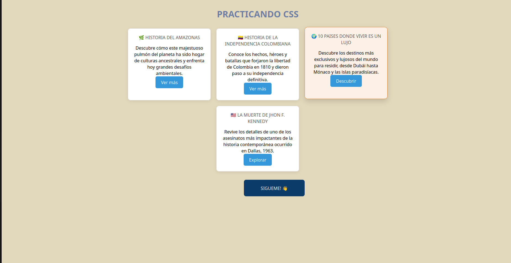
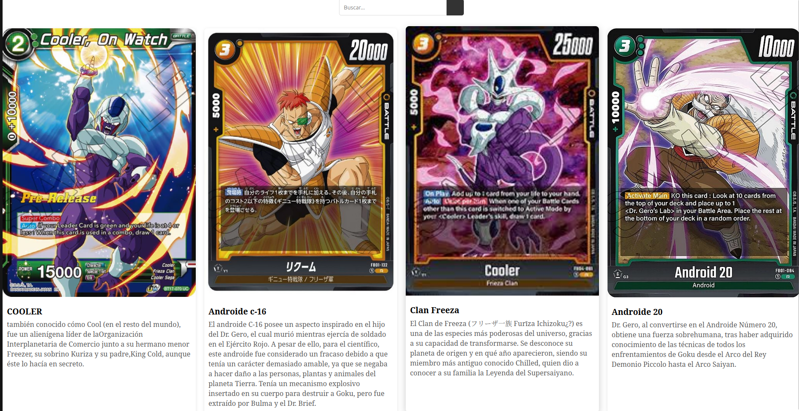
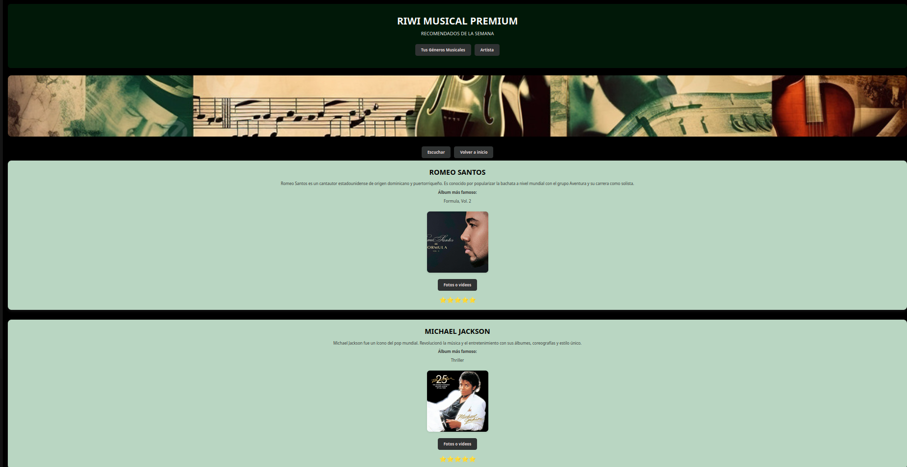

MI PAGINA WEB
PRACTICA CSS TODO UN NINJA

Visitar
Este fue uno de los primeros ejercicios iniciales, donde se buscaba integrar ejericios de clases, que se pudieses ir mostrando.
BARAJA CARTAS RIWI

Go
Ejercicio de media query, donde se buscaba generar una baraja de cartas las cuales se pudiesen ver de una manera acertada en cuando se cambiara la medida de vista.
FAN MUSIC PAGE ARTIST

Ir
Este fue un ejercicio grupal donde se intenta crear una pagina musical, la cual, se basara en tres generos musicales y artistas diferentes y exponentes a nivel mundial.
Galería

Mi Historia
PASADO
Soy Julio Molina, músico desde los 7 años, cuando mis padres me escribieron a una escuela de música, donde aprendí a tocar violín, a cantar, y el lenguaje musical, a leer musica, a escuchar musica y a desarrollar el oido de una manera muy competitiva en el mundo musical. En mi trayectoria como musico , he tenido la oportunidad de viajar por diferentes partes del mundo representando Colombia, en la galeria de imagenes puedes observar algunos momentos de constante orgullo.
PRESENTE
Code de RIWI, y actualmente me encuentro estudiando para desarrollar diferentes Proyectos, mientras practico los diferentes lenguajes de programacion que voy adquiriendo con el tiempo. En mis tiempos libres, soy el Director musical de una orquesta tropical, cantante, y compositor, y realizo eventos nacionales e internacionales.
FUTURO
Apasionado por el mundo Tech. Desde joven me interesó crear cosas y hoy estoy formándome para ser desarrollador web profesional. Me gustan los proyectos creativos, resolver problemas y aprender algo nuevo cada día. Me gusta la ciberseguridad, el mundo de la tecnologia es una gran herramienta para desarrollar mi proyecto de vida, uniendo el mundo del arte y el mundo tecnologico como constante reflejo de mi vida cotidiana.